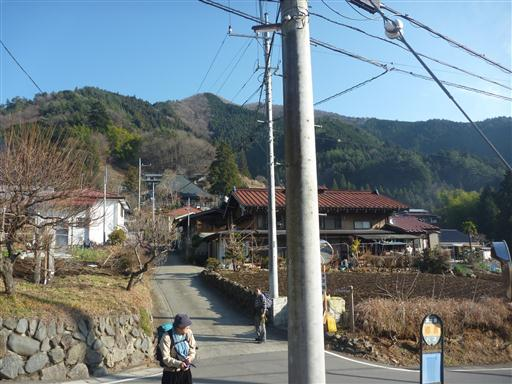
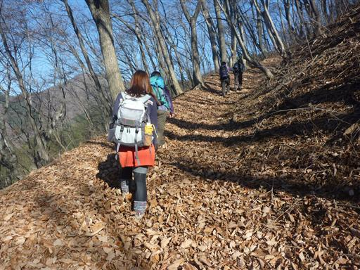
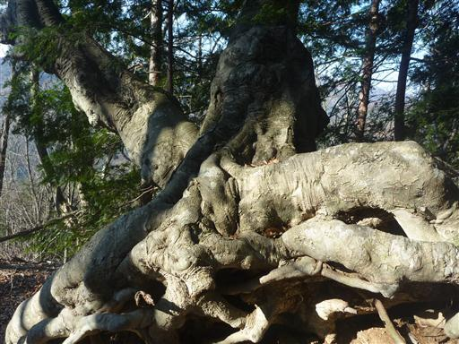
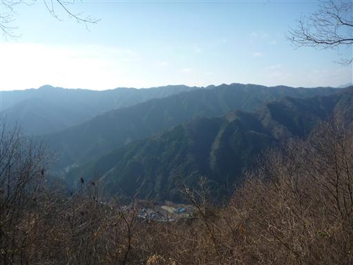
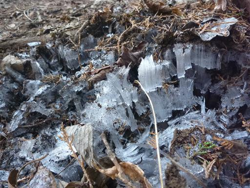
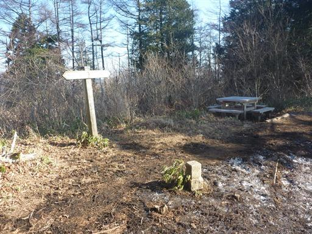
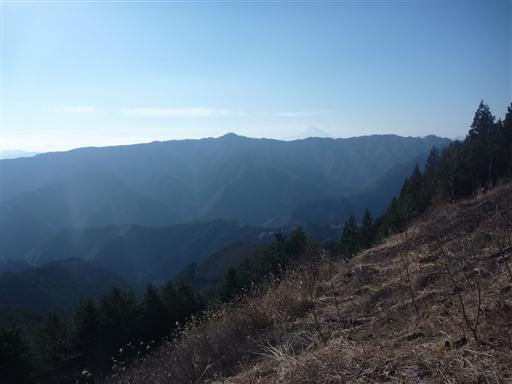
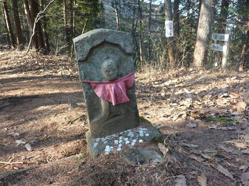
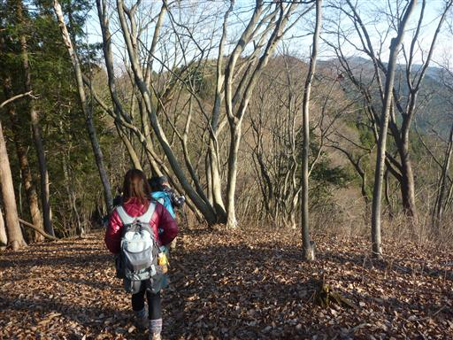
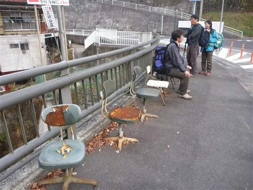

笹尾根
| 日付 | 2010年12月19日（日） |
|---|---|
| 山域 | 奥多摩 |
| メンバー | グループ（男4女2） |
| 山行形態 | 日帰り |
| アクセス | 電車、バス |
| ルート (Map) | 郷原→槇寄山→浅間峠→棡原中学校 |
奥多摩の三頭山から高尾山まで伸びる長い長い尾根は笹尾根と呼ばれている。
アップダウンが少なく、比較的人が少ない、歩きやすい尾根だ。
以前、三頭山に登った際に少しだけ笹尾根を歩いており、
今回はその先、槇寄山から浅間峠までの区間を歩くことにする。
9:15 郷原バス停到着。標高580m。

周りの木々は全て葉を落とし、くるぶしまで埋まるほど落ち葉が積もっている。

木の根を露出させた大きな木が立っている。

標高を上げていくと、あたりの展望が開けてくる。

朝晩は相当冷えるのか、霜柱ができている。

10:33 槇寄山山頂到着。標高1188m。
ここから先はなだらかな尾根歩き。ベンチに座って少し休憩する。

尾根からは富士山の頭が見えている。

尾根を越える峠には、地蔵が祀られている。

3時間ほど笹尾根を歩き、浅間峠から下山を開始する。

16:18 棡原中学校バス停到着。標高300m。
バス停には、恐ろしいほどボロイ椅子が並んでいる。
のんびりとした尾根歩き山行だった。
